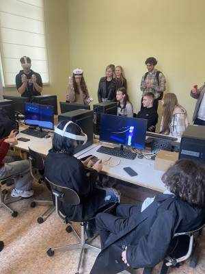

Викладачі кафедри комп’ютерних наук провели «екскурсію в майбутнє» для ліцеїстів «Перспективи»
9 жовтня на математичний факультет завітали учні Запорізького ліцею «Перспектива». Їх радо зустріла заступниця декана математичного факультету Марина Гречнєва та команда співробітників кафедри комп’ютерних наук ЗНУ (ZNU, Zaporizhzhia National University). Ліцеїстам запропонували коротку, але цікаву «екскурсію в майбутнє». Учні відвідали лабораторію віртуальної реальності, яка діє за підтримки Даремського університету (Велика Британія) – партнера ЗНУ. А ще – на власні очі побачили і навіть змогли випробувати власноруч потужне комп’ютерне обладнання та спеціалізоване програмне забезпечення. ...